住宿 Hotel Mystays Sapporo Station (札幌JR 北口)
2024年8月15日
- 住宿日期：2024/8/15
- 訂房方式：Booking
- 房型：高級雙床房 (20m2)
- 房價：￥16254
這次札幌住宿很早就訂了跟去年一樣的MYSTAYS 札幌站北口酒店。
去年住宿感想是：位置方便，房間內配置也很現代化，價格也比其他的便宜，所以今年早早就下訂，我訂房都是訂可以免費取消的選項，中間過程也有想過要不要住大通、
狸小路等其他地區，但比較房價後，還是覺得MYSTAYS札幌站北口酒店最划算，就維持原樣啦！但今年因為其他的住宿花費較高，因此札幌就只訂了高級雙床房(20m2)
去年是訂尊爵雙床房(35m2)，有寫信問旅館確認6、11歲小孩可以免費入住，床是兩張單人床加大，我們四個人睡很OK。20m2的大小我覺得可以接受，沒有太擁擠的感覺，
浴室也算寬敞，床睡起來很舒服，枕頭有不同軟硬度的可以睡自己喜歡的。不過兩次都沒有訂餐，所以不知道他的早餐如何，不過餐廳是設置在高樓層，View應該不錯。
我們到札幌的第一天是住好友家，第二天才住這家飯店，為了不用拖著大行李逛街，從機場搭JR到札幌站之後，我就先去寄放其中一個行李箱，出發前有先寫信詢問旅館，
前一天先寄放行李是免費的。
根室花丸 大同生命札幌大樓miredo店
2024年8月14日
這次跟去年一樣搭星宇航空從新千歲機場入境，一大早以非常經濟的方式一路轉車到機場(台鐵-高鐵-機捷)，因為上次已經逛過新千歲機場啦，所以這次在機場只有一個目標，就是
札幌農學校的冰淇淋！！以及上次很想吃但忍住沒買的起司塔。
(後來發現札幌車站 Stella Place Center 1F就有店面，根本不用在機場排隊) 這家冰淇淋真的好好吃啊！非常濃郁，但又不會死甜讓人吃完會口渴的那種，起司塔買了原味和藍莓口味各三個，剛好一盒，
帶去跟好友分享。第一天晚餐決定去吃去年來吃了覺得喜歡的根室花丸，
去年經驗沒有等很久，雖然號碼看起來很多，但是中間會有很多叫號不到，而前進很快。順利跟好友會合後，他說地下街有開新分店，人應該會比較少，剛對對面就是我想逛的
Montbell，
所以我們就改去另一家根室花丸啦！抽了號碼牌之後，等待的空檔還有另一件超重要的是要做，就是"買Sabon"！ Sabon
在北海道竟然只有札幌有店，函館沒有，所以就趁這個空檔走回去車站的大丸百貨大採購一下啦！
這家Sabon直接店內退稅，不用到百貨公司統一退稅的櫃台，所以超級方便！最近有出一款很夏天的香味，就也買了一個禮盒組來用用看。買完Sabon逛完Montbell，距離我們壽司的號碼還好久，我這次第一天完全沒有想其他行程，
想說吃完晚餐就回好友家休息了，沒想到這次根室花丸等了這麼久，最後好像是快9:00才到我們(哭哭)，中途想放棄時，央央說他很想吃，我們只好繼續等。事後回想，應該趁著空檔去採購一下藥妝的！
當時覺得才第一天，後面還有很多時間可以買，就沒有想要先買，結果.....後面就沒有買藥妝的時間了(哭)！根室花丸我們三大二小，總共吃了31盤，花了￥8932。
大通公園 & BARISTART COFFEE
2024年8月15日
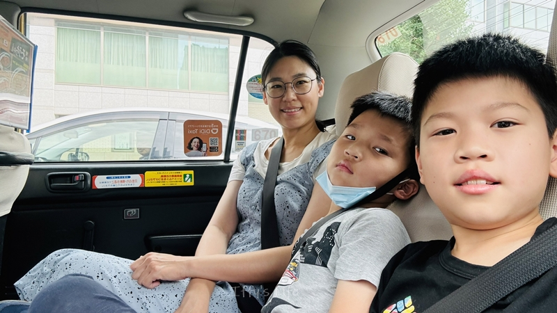
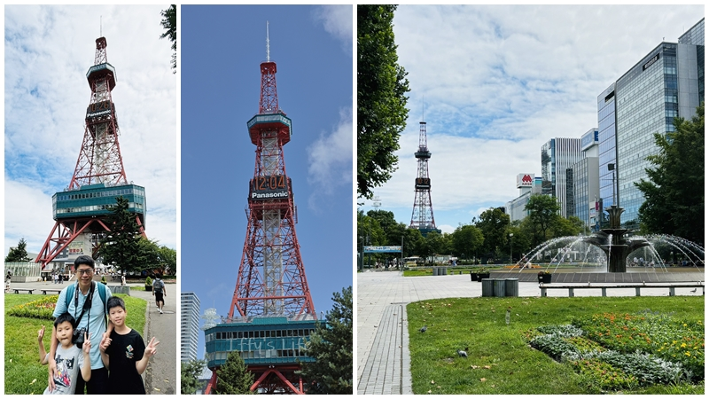
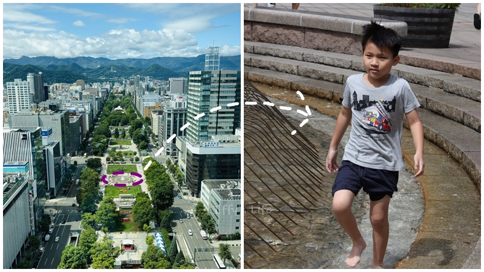
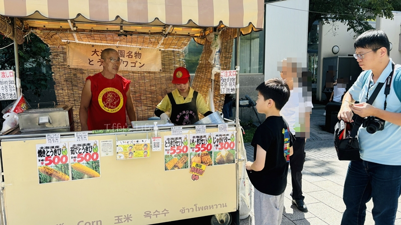
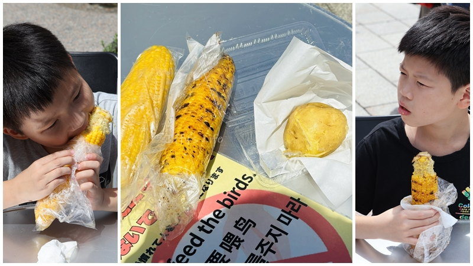
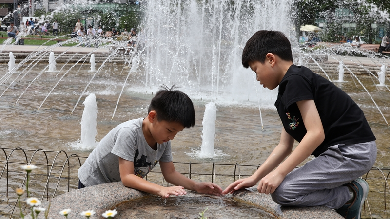
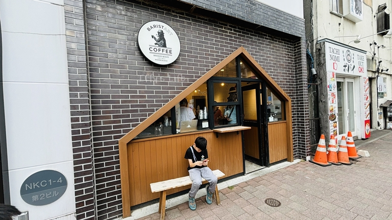
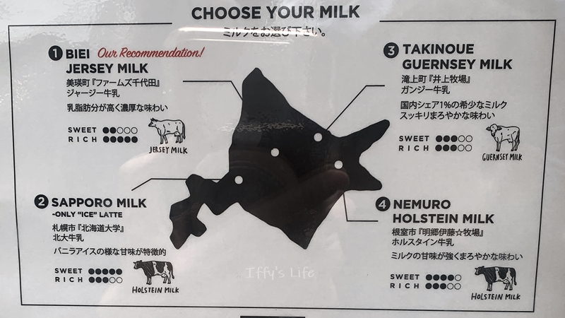
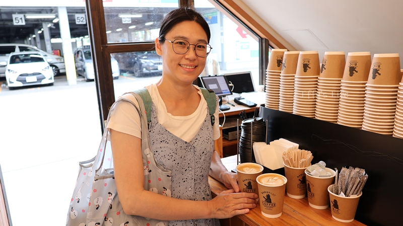
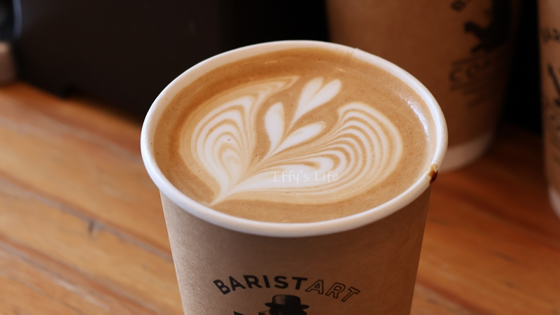
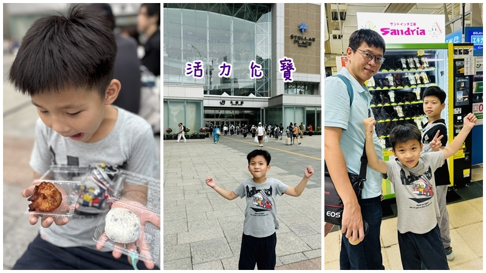
這次在札幌沒有安排任何行程，走非常隨意的路線，只有想說要再去大通公園吃玉米和馬鈴薯，還有附近的BARISTART COFFEE喝拿鐵。因此一早便來到大通公園，托好友的福，讓我們體驗了一下在日本搭計程車。
非常幸運的今天天氣已經轉晴(昨天晚上是雨天，去年第一天到札幌也是遇到下雨)。上次沒有走到電視塔，這次允寶說想要過去看看，所以我們就慢慢散步過去，然後買票上去看一下風景(大人￥1000，學生￥500)。
天氣超好，照片拍起來超美的。之後便到公園噴水池旁邊吃玉米和馬鈴薯啦！北海道的玉米怎麼可以這麼甜、這麼好吃啦！(烤玉米￥500，水煮玉米￥500，馬鈴薯￥300)
因為晚上跟好友約好要去吃上次沒吃到的奧芝商店湯咖哩，中午吃了玉米和馬鈴薯，呈現一個要飽不飽的尷尬狀態，在公園噴水池玩了一陣子後，決定到旁邊的新光三越地下街看看有什麼想吃的，外帶去飯店吃。
允寶買了一個炸雞，我買了一個大福、和麵包，
然後轉戰去BARISTART COFFEE外帶拿鐵，這家拿鐵非常特別，
是可以選要搭配哪裡產的牛奶，Menu上會標示不同產地牛奶SWEET以及RICH的程度，跟據去年的經驗，選牛奶甜度高的喝起來會比較順口，
選甜度較低的，咖啡味會比較明顯。在拉花上也可以明顯的看出差別，RICH程度高的圖樣比較穩定。相同的咖啡搭配不同的牛奶，我這木舌頭都可以喝出不同的風味，真的好神奇啊。
愛喝拿鐵的人一定要來試試看(大杯拿鐵￥770)。
雖然才兩點多，但是我們已經累了，決定先去飯店check in休息一下，到飯店的路上，穿過札幌車站時，央央說要買上次吃的好吃三明治，就是那個
Sandria三明治，在JR札幌站內有一放一台自動販賣機。 我原本預計在飯店休息一下後我就自己一個人出來逛街，但一躺到床上就發懶，
最後待到晚餐時間才出發去和好友會合吃湯咖哩。("再度"錯失一個採購藥妝的時間)
湯咖喱 奥芝商店 站前創成寺
2024年8月15日
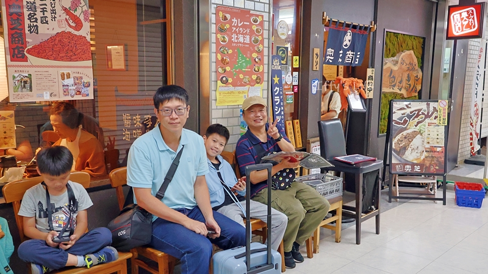
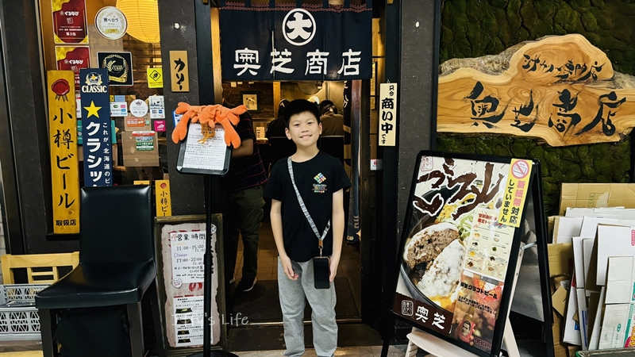
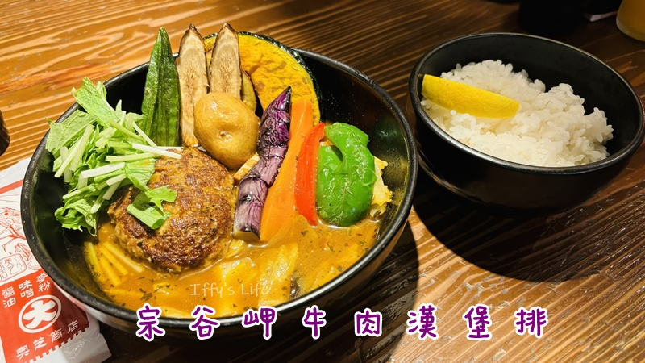
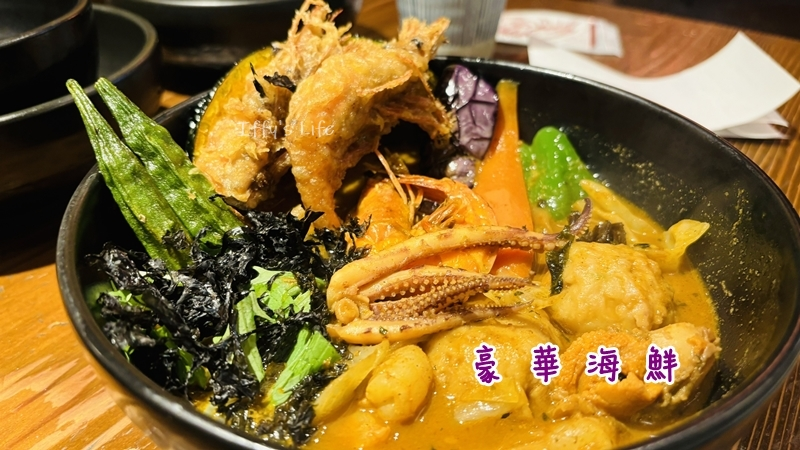
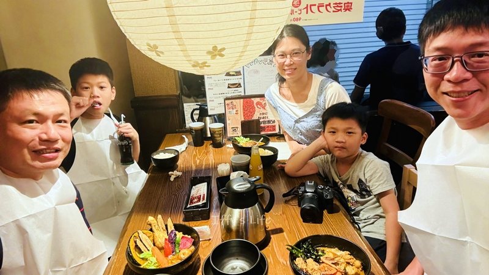
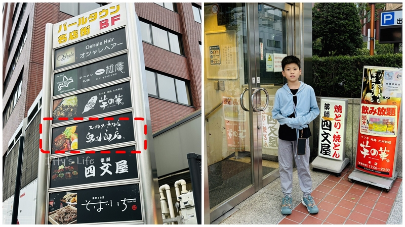
去年來札幌時沒吃到這家好友推薦的湯咖哩（我們在人家下午休息的時間去😅），所以這次來是一定要去吃的(安排在第二天晚餐)。我們去的是
湯咖喱 奥芝商店 站前創成寺這家分店。
到的時候已經很多人在排隊了，等了應該有半小時以上才順利入座用餐，等待的時候店員就會先給菜單，快到的時候會先來點餐，有好友在都不用擔心看不懂菜單跟溝通問題，
我整個超放鬆，入座後很快就上餐了，非常有效率！
我點的是宗谷岬牛肉漢堡排湯咖哩(雞湯底)￥2150、阿光點豪華海鮮(蝦湯底)￥2480、好友點嫩雞腿(雞湯底)￥1580。湯底有雞、蝦、牡蠣(+450円)三種可以選擇，
所以海鮮要配雞湯底也是可以的。
辣度的話則有0~12個層級，因為要分小孩吃，所以只能點不辣的。飯量的話，有小(150g)、普通(220g)、中盛(400g, +100円)、大盛(600g, +200円)這幾種份量。
也可以自己再額外加點蔬菜或是主食。每個人都要低消，小孩也要，所以幫他們點了飲料(果汁和可樂，都是330円)。這家真的很好吃耶！飯的口感是我喜歡的，比較軟、濕潤，
但又粒粒分明，終於吃到日本厲害的白飯了！湯咖哩蔬菜種類也蠻多，大概有10種，不是像一般咖哩只有蘿蔔、馬鈴薯，整個超豐富的，配色也很美。小孩很愛漢堡肉，
應該直接幫他們點一份的(印象去年有幫央央點一份兒童湯咖哩，但他和允寶都不愛，去年亂吃的那家真的不行，那家在車站旁邊的Big Camera，這棟大樓後來也拆掉了)。
阿光的海鮮配蝦湯底，蝦味超級重，我覺得也不錯吃，有另一種風味，但是央央就完全不愛了。
JR塔展望室T38
2024年8月15日
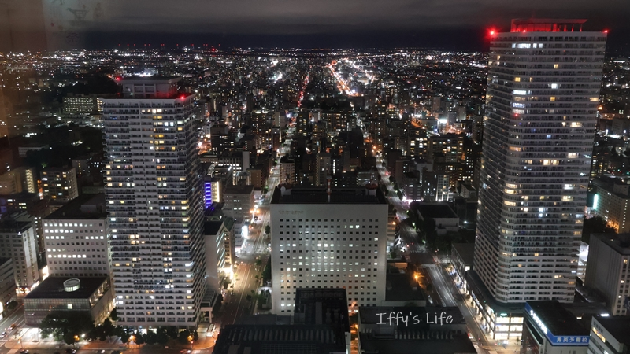
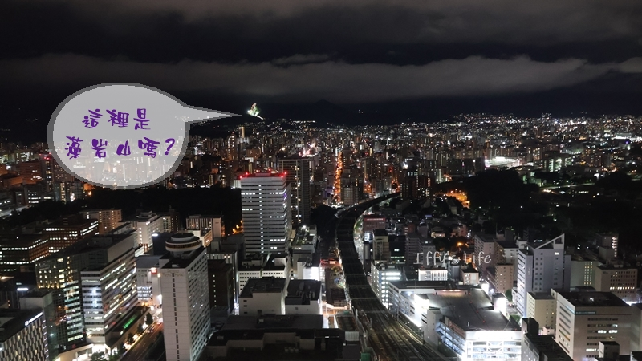
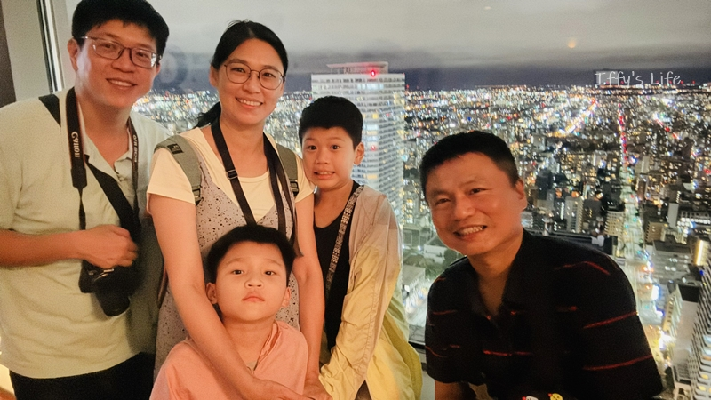
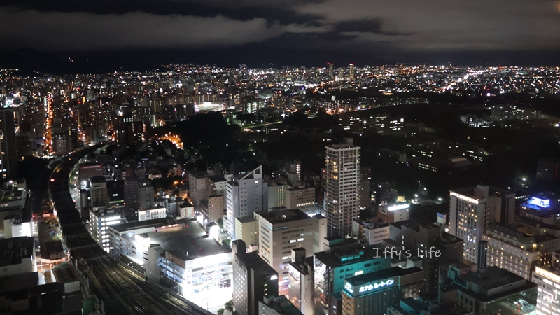
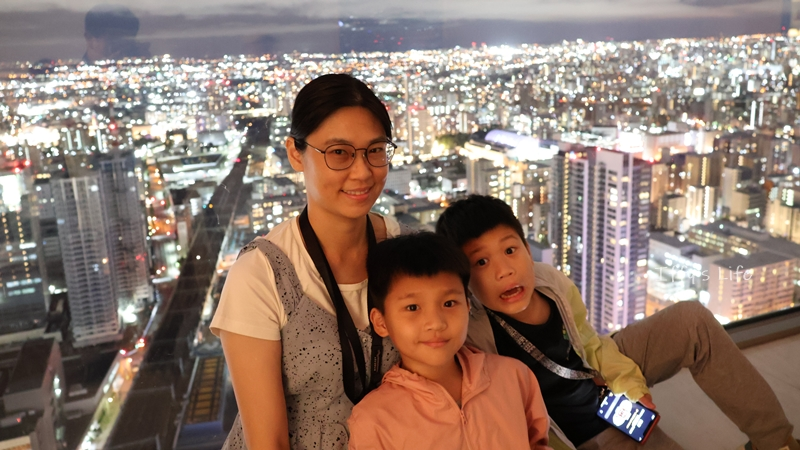
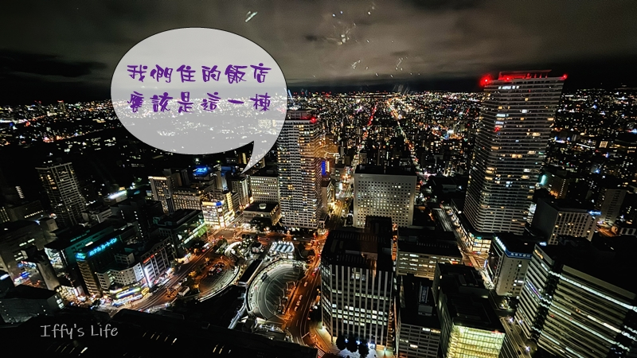
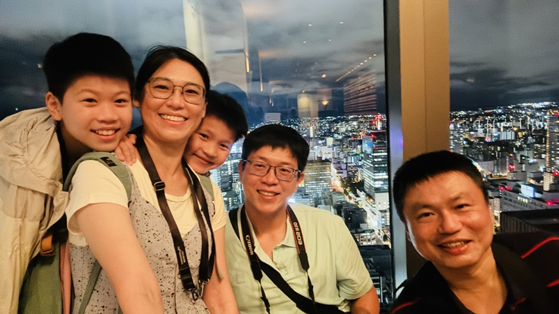
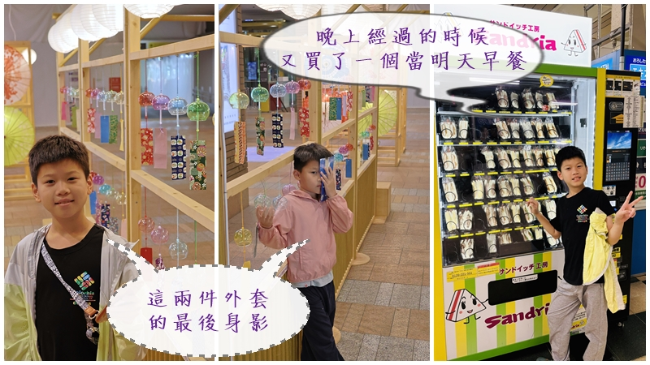
吃完湯咖哩後接下來的行程是JR塔展望室T38。感謝好友幫我們付門票的費用讓我們上來看夜景。
人不是很多，還蠻安靜的，窗台很大，可以放小腳架拍照，但是玻璃反光很嚴重，相機要很貼近玻璃才行。有舒適的面窗座位，可以坐下來欣賞夜景。但是我們有小孩是沒辦法悠閒的，
一下子他們就覺得很無聊，要走了。對了，男生一定要去廁所，他們說小便斗直面夜景，超級讚 ^^"。我們在上面可能待不到一小時，下來後順便去逛一下無印良品，這次出發前有看了
一些youtuber的介紹，有許多必買好物，像是超級好收納的購物袋、除水垢紙巾、各種特定功能的溼紙巾(卸妝、防曬、牙齒清潔等)、還有很多人推的美容液跟空氣髮梳(梳頭髮真的很舒服耶)，
還有涼感噴霧看起來也很讚。但是，日本百貨公司好早關門啊，20:30就要關了，我們20:00多才下來，所以完全沒有時間，但是我現在也還沒要採買就是了，只是先來看一看實品，預計之後到函館時，
會在函館的無印良品一次採買(五稜郭附近有一大棟無印良品)。